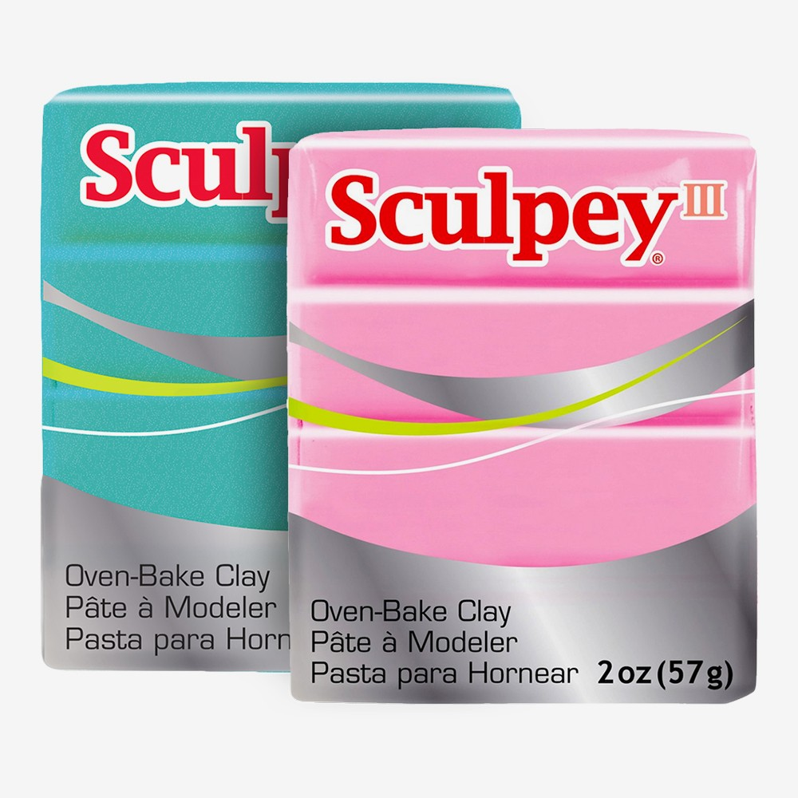

Creating with clay

Creation!
- Bend and fold clay into blob to soften it
- Squeeze, roll, and poke into the desired shape
- Use other colors in places you'd like for detail
- Take the desired shape and use tools to make detailing marks
Baking!
- Preheat oven to the package instructions. (varies on different clays)
- Use oven safe sheet to bake on. clay may stain
- Bake for the allotted time on the packaging.
- for larger pieces use wires to support them.
- when finished baking remove from oven and let it cool.
The creators instructions and shop
Contact info
email